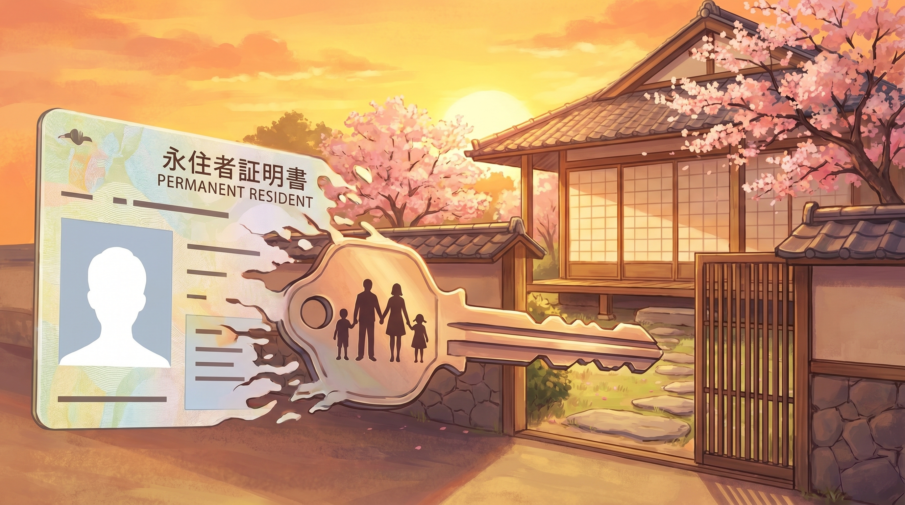

Career Growth as a Foreign IT Engineer in Japan
Building an IT career in Japan as a foreigner is a unique journey. The promotion system, work culture, and professional expectations differ significantly from Western countries and most of Southeast Asia. This article provides a realistic look at how you can level up, when to switch companies, and what it takes to survive — and thrive — in the long run.
From Junior to Senior: A Realistic Timeline
Below is a general overview of the IT engineer career ladder at Japanese companies. Keep in mind: this timeline is slower than in Western countries or Southeast Asia, and that is by design.
| Year | Level | Description |
|---|---|---|
| 1–2 | Junior / 新人 (shinjin) | Focus on learning the codebase, company culture, and building trust. Lots of pair programming. |
| 3–4 | Mid-level / 中堅 (chuuken) | Handle tasks independently, review junior code, participate in design discussions. |
| 5–7 | Senior / 主任 (shunin) | Lead features/modules, mentor juniors, make architecture decisions. Fork: tech track vs. management. |
| 8+ | Lead / 係長 (kakaricho) | Responsible for an area or small team. Choose: stay technical or move into management. |
Promotions in Japan are slower than in Western countries or Southeast Asia. What is valued most is not rapid advancement, but consistency and patience. Japanese companies prize 安定感 (a sense of stability) — they want to know you are reliable over the long term, not just brilliant in the short term.
Switching Companies (転職 / Tenshoku)
In the past, switching companies in Japan was considered taboo. The concept of 終身雇用 (lifetime employment at a single company) was deeply ingrained. But times have changed — especially in the IT industry. Today, engineers who switch every 2–3 years are often seen as ambitious with a growth mindset.
When to consider tenshoku:
- Stagnant salary — annual raises of only 1–3%, falling behind market rate
- Outdated tech stack — stuck on legacy systems with no exposure to modern technologies
- Poor culture fit — you have tried to adapt but still feel uncomfortable after 1+ years
- No new learning — your skills have plateaued for a year or more
A salary jump through tenshoku can reach 20–40% in one move — far greater than annual raises at the same company. In Japan's IT industry, this is the most effective way to increase your compensation.
Popular tenshoku platforms:
Learning Habits & Certifications
In Japan, certifications are not just resume decorations — they are highly valued. Many companies offer bonuses or automatic salary increases when you pass certain certifications. Some companies even cover the exam fees.
High-value certifications:
- IPA 基本情報技術者 (FE) — the baseline for all IT engineers in Japan. A must-have.
- IPA 応用情報技術者 (AP) — immediately boosts your credibility. Many companies use this as a promotion requirement.
- AWS Solutions Architect — highly sought after, especially at startups and companies migrating to the cloud.
- Oracle Database — highly valued at enterprise companies and SIers (System Integrators).
Beyond certifications, side projects are also important. Not just for your portfolio, but as a way to explore new technologies and stay motivated. Many Japanese engineers actively write technical blog posts on Qiita or Zenn — this is also a form of community contribution that is well regarded.
Freelance & Side Income
The trend of 副業 (side jobs) in Japan is becoming more accepted, but there are several things you need to be aware of:
- Check your employment contract — many companies still prohibit side jobs. However, the trend is shifting, especially after the Japanese government began promoting 副業解禁 (the liberalization of side jobs).
- Taxes — additional income exceeding ¥200,000 per year requires you to file a 確定申告 (kakutei shinkoku / tax return). Do not skip this.
- Visa — the 技人国 (Engineer/Specialist in Humanities/International Services) visa allows freelancing as long as the work falls within the scope of your visa qualifications.
- Platforms — Lancers, CrowdWorks, Reworker. Rates for senior engineers: ¥5,000–10,000 per hour.
If your company does not yet allow side jobs, start with open source contributions or writing technical blog posts. This builds your personal brand without violating your contract, and can serve as a stepping stone to freelancing when the time is right.
The Most Important Soft Skills
Technical skills can be learned, but having the right soft skills determines whether you merely survive or truly thrive in the Japanese workplace. Here are the five most critical ones:
- HouRenSou — over-communicating is better than under-communicating. The 報連相 (Houkoku-Renraku-Soudan) system is the foundation of communication in Japan. Report your progress, inform others of changes, and consult on problems — even if you think they are trivial. It is better to be seen as overly thorough than to be perceived as lacking transparency.
- 空気を読む (kuuki wo yomu) — reading the room. Many things in Japan are left unspoken. Learn to read nuance — when a meeting is effectively over even though no one has said so, when “let me think about it” actually means “no.”
- 謙虚さ (kenkyo-sa) — humility. In Japan, your work speaks louder than your words. Avoid being overly aggressive in self-promotion — demonstrate your value through consistent, high-quality deliverables instead.
- Reliability & consistency — 80% on time is better than 100% late. In Japanese work culture, a deadline is not just a target — it is a promise. Delivering “good enough” work on time is valued far more than delivering perfect work late.
- Acknowledge mistakes honestly, and explain preventive measures. When a bug or issue occurs, do not cover it up. Acknowledge it, explain the root cause, and — most importantly — present a prevention plan (再発防止策 / saihatsou boushi-saku). This builds trust.
Long-Term Survival Tips
Based on 10 years of living and working in Japan, here are the things that truly make a difference:
Keep improving your Japanese — even after passing N2 or N1. Business Japanese (keigo, formal emails, reports) is an ever-evolving skill with always more to learn. Language ability equals the ability to build deeper relationships with your colleagues.
Build a broad network — do not limit yourself to people from your own country. Attend 勉強会 (benkyoukai / study groups), tech meetups, and local communities. A diverse network opens doors you never expected.
Protect your mental health — find a support system, both online and offline. Do not underestimate burnout. Living abroad without close family can be emotionally draining. Therapy, journaling, or even regular chats with friends can be a lifeline.
Have a long-term plan — is your goal Permanent Residency? Returning to your home country? Moving to another country? Plan early, because major decisions require years of preparation.
Do not forget your roots — your ability to bridge cultures between your home country and Japan is a unique strength. Many Japanese companies expanding into Southeast Asia need people who understand both cultures. This is a competitive advantage that local engineers do not have.
“Surviving in Japan is not about being perfect. It is about continuously learning, adapting, and never forgetting who you are.”
Permanent Residency (永住権)
For those who decide to settle long-term, Permanent Residency (PR) is a major milestone. There are two main paths:
- Live in Japan for 10 consecutive years
- At least 5 years on a work visa
- Stable income and clean tax record
- No criminal violations
- 70+ points on the HSP point system = PR in 3 years
- 80+ points = PR in 1 year
- Points are calculated from: salary, age, education, work experience, certifications, Japanese language ability
- IT engineers with a salary ≥¥5M and a bachelor's degree typically score above 70 points
Universal requirements: clean tax record (no late payments), no criminal violations (including serious traffic offenses), and stable income. Make sure you save documentation from the very beginning — the PR application process requires records going back several years.

Conclusion
Career growth as a foreign IT engineer in Japan requires a different approach. Promotions are slower but more stable. Tenshoku is the primary tool for salary acceleration. Certifications are not formalities — they have real impact. And soft skills, especially Japanese-style communication, often matter more than hard skills.
Most importantly: maintain a long-term perspective. Whatever your goal — PR, returning home, or simply gaining a few years of experience — every day in Japan is an investment in your future. Make the most of it.
Comments
0 comments